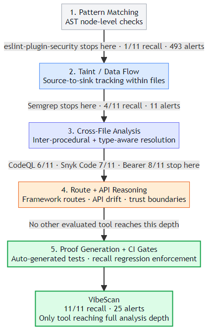

Abstract
Comparing JavaScript security scanners by raw alert counts confounds detection with noise. We present a reproducible multi-dimensional study on an adjudicated DVNA benchmark [1] with aligned peer tool runs, expanded rule-family coverage, and metrics that separate what is found (recall) from triage burden (cases-per-alert precision proxy) and operational cost (wall-clock scan time). Findings are interpreted alongside standard web-application risk framing [2]. VibeScan attains the highest DVNA recall (100.0%), 27.3 percentage points above the next-ranked scanner (Bearer), with supporting analyses for difficulty-weighted coverage, recall–precision tradeoffs, and recall–time tradeoffs. Limitations: precision remains a proxy (not full per-alert false-positive adjudication for every tool), and the expanded corpus is partially VibeScan-aligned for family stress testing.
Research Questions
- RQ1: Can VibeScan sustain top recall on hard cases?
- RQ2: Where do peers diverge by family and case difficulty?
- RQ3: How do precision-proxy and runtime affect practical scanner value?
Method
Six SAST tools were benchmarked against 11 adjudicated DVNA vulnerability cases spanning 6 rule families (Injection, Redirect, Integrity, Secrets & Crypto, Auth & Access, XSS). Each tool ran in its default or recommended configuration on identical source. Metrics: recall (cases detected / 11), precision proxy (cases / raw alerts), case difficulty (ETS delta from consensus p = detected-by/6), and wall-clock scan time. The expanded corpus (28 unique, 80 stress repeats) stress-tests family coverage; only the 11-case DVNA core is used for cross-tool comparison.

Most static analysis tools stop after pattern matching — flagging code that resembles a known vulnerability but providing no further evidence. VibeScan extends the pipeline through semantic context extraction and taint-flow validation, giving developers actionable proof rather than undifferentiated alerts.
Cross-tool DVNA results
VibeScan is the only tool with full coverage across all vulnerability categories, especially outperforming in complex injection and client-side cases.
| Category · Scenarios covered | 1VibeScan | 2Bearer | 3Snyk | 4Semgrep | 5CodeQL | 6ESLint | |
|---|---|---|---|---|---|---|---|
| Injection | SQL, Command, NoSQL (3) | 100% | 100% | 66% | 33% | 66% | 33% |
| Redirect & Nav | Open Redirect (1) | 100% | 100% | 100% | 100% | 100% | 0% |
| Integrity | Unsafe Deserialization (1) | 100% | 0% | 100% | 100% | 100% | 0% |
| Secrets & Crypto | Secrets + Weak Hash (2) | 100% | 100% | 100% | 50% | 50% | 0% |
| Auth & Client | Env + XSS (2) | 100% | 0% | 50% | 0% | 50% | 0% |
| Overall recall (11 cases) | 100% | 72.7% | 63.6% | 36.4% | 54.5% | 9.1% | |
The matrix groups DVNA's 11 benchmark cases into five vulnerability categories. VibeScan is the only scanner to achieve 100% coverage across all five. Peer tools perform well on Injection and Redirect but drop sharply in Auth & Client-side, where only VibeScan detects both cases — highlighting the coverage gap that raw alert counts obscure.
A tool's raw alert count is a poor proxy for scanner quality. eslint-plugin-security emits over 500 alerts yet detects only 1 of 11 benchmark cases, while VibeScan reports 25 alerts and detects all 11. The negative correlation (Pearson r = -0.73) confirms that alert volume and actual detection are largely independent — evaluating scanners by volume alone is misleading.
The precision proxy (cases detected / raw alerts) measures how efficiently a tool converts its output into real findings. VibeScan reaches the upper-right quadrant — highest recall with the best signal-to-noise ratio. Semgrep achieves a competitive ratio but at only 36% recall, while eslint-plugin-security falls to the lower-left with both low recall and low precision.
VibeScan completes a full DVNA scan in 0.86 seconds with 100% recall — fast enough for pre-commit hooks or CI gates. CodeQL requires over 60 seconds for 54.5% recall. Bearer and Snyk Code cluster at 10–15 seconds with moderate recall, making them better suited to pipeline stages that tolerate longer waits.
Limitations
- Peer runtime fields are not in historical artifacts.
- Precision proxy is not formal precision.
- Expanded corpus remains VibeScan-focused.
Key Findings
- RQ1: 100% DVNA recall (11/11); all hard cases (Δ ≥ 14) missed by 4+ peers.
- RQ2: Peers strong on Injection/Secrets; Auth/XSS ≤ 2 tools.
- RQ3: Upper-right on recall vs. precision; fastest scan (0.86 s).
References
- [1] AppSecCo. Damn Vulnerable Node Application (DVNA). github.com/appsecco/dvna.
- [2] OWASP Foundation. OWASP Top 10:2021. owasp.org/Top10/.
- [3] Semgrep, Inc. Semgrep documentation. semgrep.dev/docs.
- [4] GitHub. CodeQL documentation. codeql.github.com/docs.
- [5] ESLint Community. eslint-plugin-security. github.com/eslint-community/eslint-plugin-security.
- [6] Snyk Ltd. Snyk CLI. docs.snyk.io/snyk-cli.
- [7] Bearer. Bearer (open-source SAST). github.com/Bearer/bearer.
- [8] ETS. Final Study Statistical Analysis for the Redesigned TOEIC Bridge Tests (RM-19-09), item difficulty definitions for p and delta.